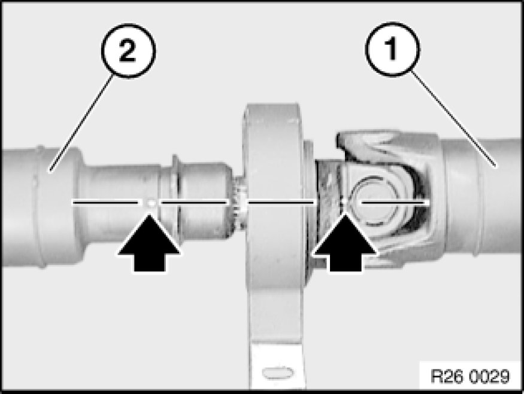
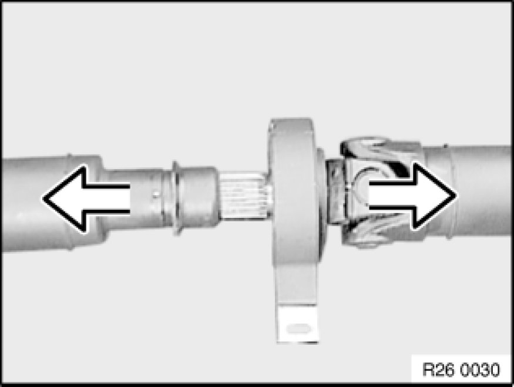
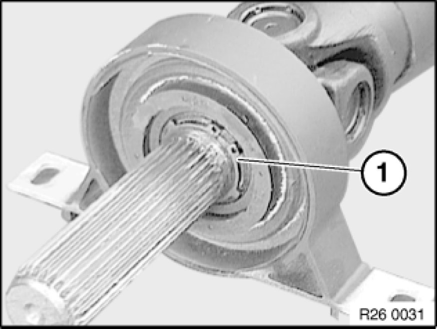
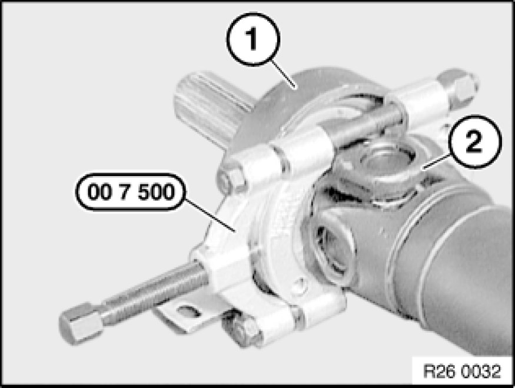
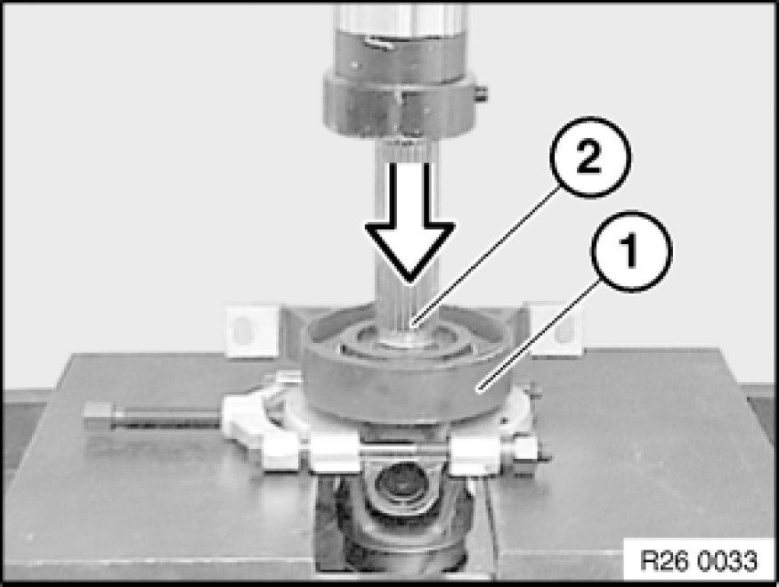
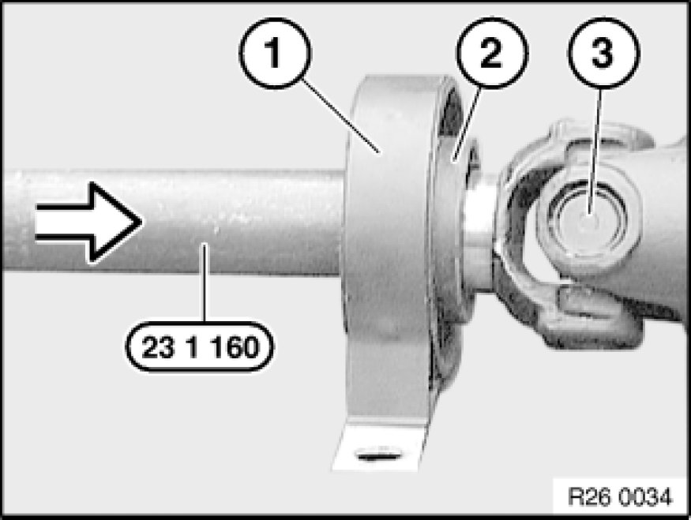
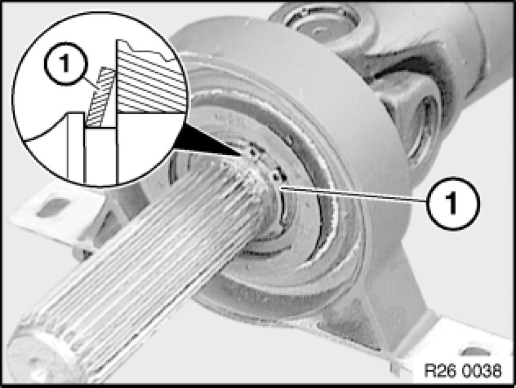
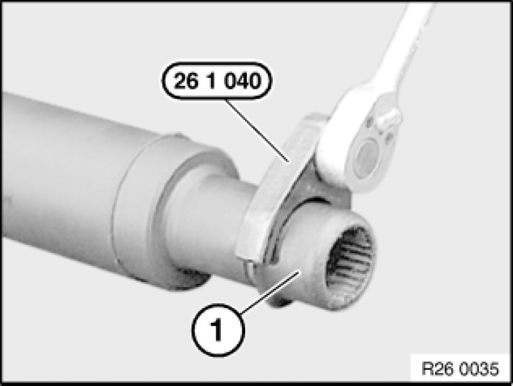
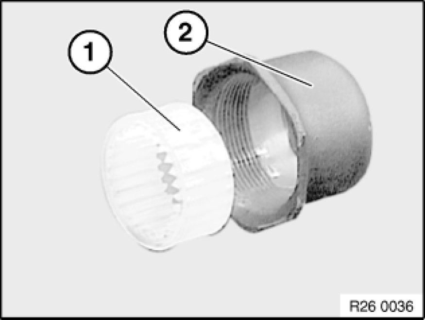
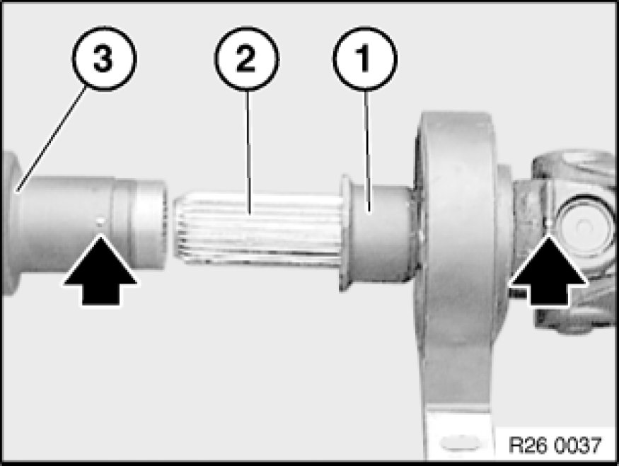

Replacing Complete Propeller Shaft Center Mount
26 12 001 - Replacing complete propeller shaft center mount

Special tools required:
- 00 7 500 00 7 500 Universal Puller Kukko 17/K
- 23 1 160
- 26 1 040 26 1 040 Spanner

Necessary preliminary tasks:
- Remove propeller shaft Removing and Installing Propeller Shaft (Cardan Universal Joint) Completely.

Note:
The propeller shaft is balanced. The front and rear propeller shafts must be reassembled in the same position.
Mark front propeller shaft (1) and rear propeller shaft (2) in one plane.

Pull propeller shaft apart.

Remove snap ring (1).

Install special tool 00 7 500 00 7 500 Universal Puller Kukko 17/K between center bearing (1) and universal joint (2).

Using a hydraulic press, force center bearing (1) off propeller shaft (2).

Force new center bearing (1) onto propeller shaft. Collar (2) must point to universal joint (3). Drive center mount firmly home with special tool 23 1 160.

Install new snap ring (1), with plate to bearing.

Screw threaded ring (1) off propeller shaft. If necessary, use special tool 26 1 040 26 1 040 Spanner as an aid.

If necessary, insert new clamping ring (1) in threaded ring (2).

Force threaded ring (1) onto shaft (2).
Grease longitudinal splines of shaft (2) uniformly.
Grease, refer to BMW Service Operating Fluids.
Observe markings and force rear propeller shaft (3) onto shaft (2) (markings must be flush).
Screw down threaded ring (1) with propeller shaft (3) until hand-tight.